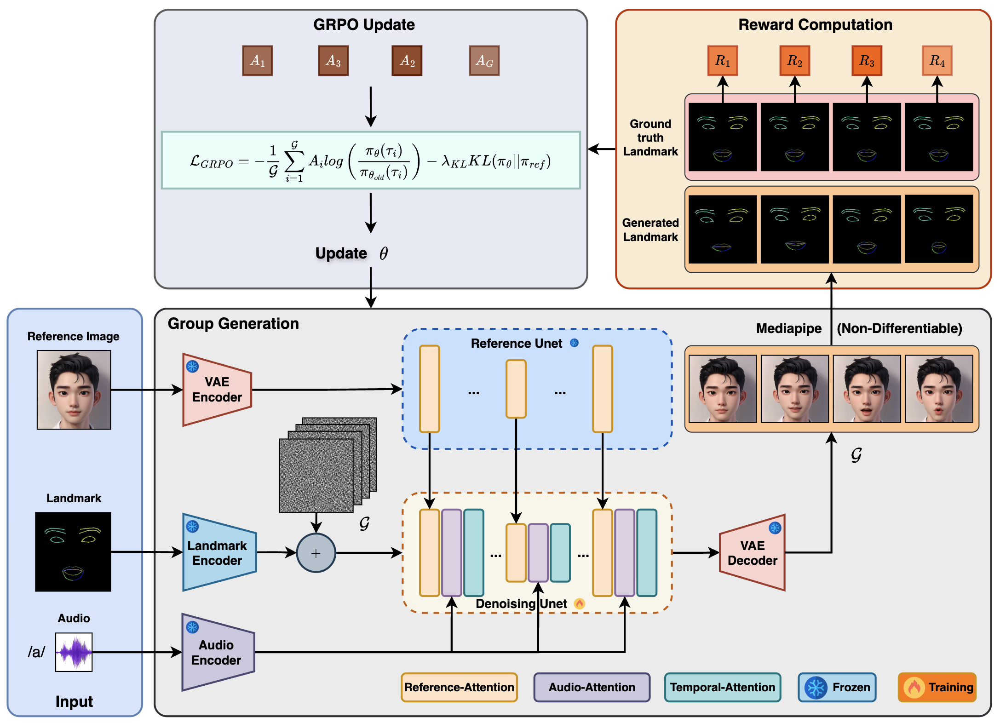

Abstract
Talking-face generation has recently advanced with diffusion-based frameworks. However, these models are commonly optimized with reconstruction objectives, which mainly improve visual quality rather than directly enhancing audio-lip synchronization. Existing methods often address this issue by introducing learned synchronization networks such as SyncNet. Although effective, such auxiliary networks are difficult to train and often provide black-box reward signals. In addition, this issue is more critical in diffusion-based generation, where facial details are still unclear and unreliable at early denoising steps. As a result, applying audio–lip synchronization supervision during these steps may introduce noisy guidance and degrade generation quality.
Motivated by these limitations, we propose Talk-GRPO, a post-training framework that formulates talking-face generation as a policy optimization problem and applies Group Relative Policy Optimization to optimize synchronization-oriented rewards at the final generation stage. Instead of relying on learned synchronization reward networks, Talk-GRPO uses lightweight and interpretable geometric cues derived from MediaPipe facial landmarks to construct a non-differentiable reward for audio-aware lip motion alignment. This design enables transparent reward computation and avoids black-box synchronization models. Experiments on multiple datasets demonstrate that Talk-GRPO consistently improves audio-lip synchronization for models with and without audio-lip synchronization losses, while preserving facial structure and temporal consistency.
Pipeline Overview

Test Videos
We show representative results on MEAD for in-domain testing and on the unseen HDTF and CREMA-D datasets for cross-dataset robustness evaluation. Each video is generated using landmarks as structural driving conditions and audio for mouth motion.
Results on MEAD
MEAD Example 1
MEAD Example 2
MEAD Example 3
MEAD Example 4
Results on HDTF
HDTF Example 1
HDTF Example 2
HDTF Example 3
HDTF Example 4
Results on CREMA-D
CREMA-D Example 1
CREMA-D Example 2
CREMA-D Example 3
CREMA-D Example 4
Reference Images
We present the reference portraits used for qualitative visualization.
Qualitative Results
We show qualitative examples with the reference image on the left and concatenated visualization videos on the right, illustrating the driving motion and generated talking-face results.
Example
Example
Example
Example
Example
Example
Example
Example
Example
Example
Example
Example
Example
Example
BibTeX
@article{talkgrpo2026,
title={Talk-GRPO: Post-Training Talking-Face Generation via Landmark-Guided GRPO without Learned Synchronization Models},
author={Anonymous Authors},
journal={arXiv},
year={2026}
}